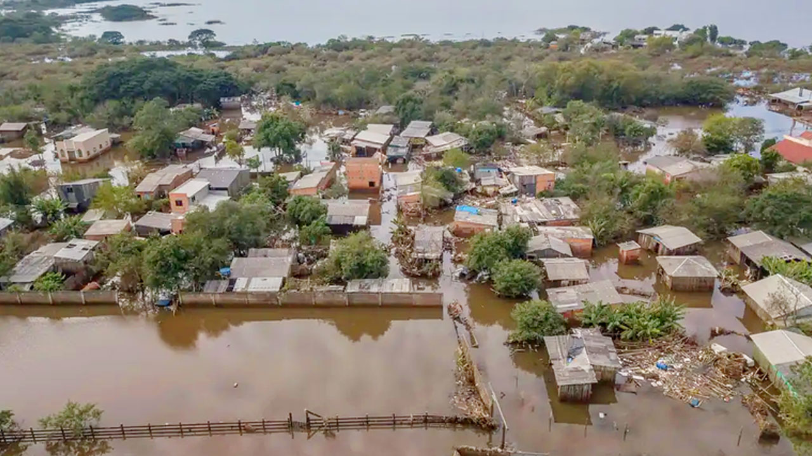
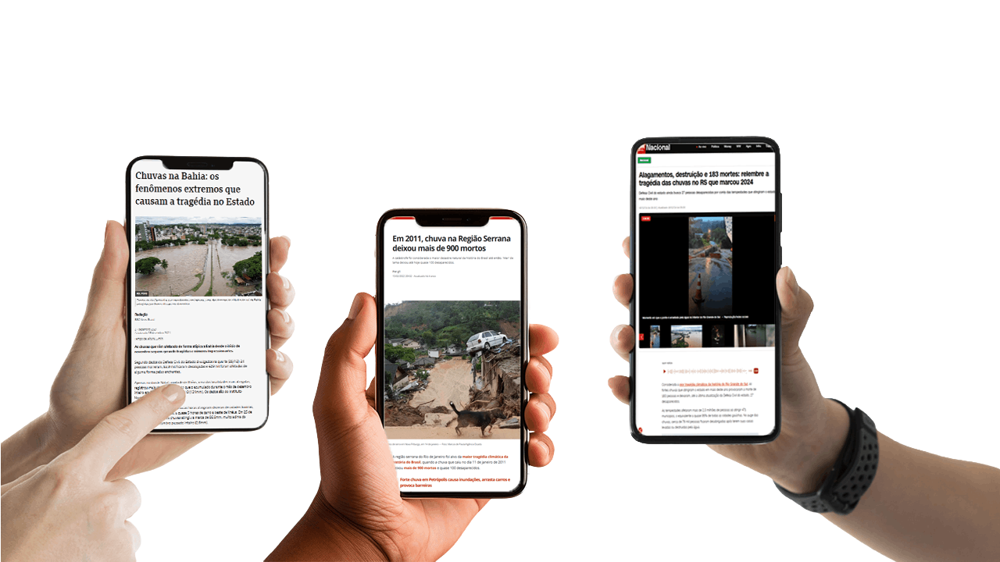

Eventos climáticos extremos, emergência climática e emergências em saúde pública
Seja bem-vindo(a) à primeira aula do módulo II.
Nesta etapa, vamos apresentar as características que definem um desastre intensivo, distinguindo‑o de outros tipos de eventos e listando exemplos de inundações bruscas, enxurradas e deslizamentos.
Ao final desta aula, você estará apto(a) para identificar os principais tipos de desastres intensivos e seus determinantes.
Vamos começar?
O que são desastres?
Os desastres são fenômenos complexos, resultantes da interação entre ameaças naturais (chuvas intensas, inundações, deslizamentos) e vulnerabilidades sociais e ambientais. A Política Nacional de Proteção e Defesa Civil (PNPDC) define desastre como um evento adverso que causa danos humanos, materiais e ambientais significativos (BRASIL, 2012).

Entretanto, especialistas lembram que, embora fenômenos como chuvas fortes ou secas sejam naturais, os desastres não o são: eles são frutos de processos sociais e históricos que tornam determinadas populações mais expostas (FREITAS; ROCHA, 2014). Logo, o que transforma uma enxurrada em desastre, por exemplo, é a combinação de fatores como ocupação de encostas, impermeabilização do solo, drenagem deficiente e falta de planejamento urbano.
Na literatura, os desastres classificam-se conceitualmente como:
São eventos catastróficos de baixa probabilidade, mas de altíssimo impacto, caracterizados por uma elevada taxa de mortalidade e destruição maciça de infraestrutura, ou seja, têm potencial para grandes perdas e mortalidade.
Desastres extensivos não causam elevado número de óbitos, mas são responsáveis por danos à infraestrutura e habitações, agravando as condições de vida das populações afetadas.
No contexto brasileiro, contudo, a distinção quantitativa é cada vez menos clara: inundações abruptas, enxurradas e deslizamentos têm ocorrido com frequência crescente, tornando‑se um desafio recorrente para a gestão de riscos. Entre 1991 e 2023, mais de 22 mil eventos de chuvas intensas, inundações e enxurradas foram registrados, representando um terço de todos os desastres de origem natural contabilizados no país. Essa tendência está associada às mudanças climáticas e à urbanização desordenada, que amplificam a severidade dos eventos.

Cenário brasileiro
O Brasil vivenciou, entre 1991 e 2023, mais de 67 mil desastres naturais, afetando 232,59 milhões de pessoas (FREITAS; CUNHA; ROCHA, 2025). A publicação “Proteção & Defesa Civil e os 30 anos de desastres no Brasil: 1991-2020” (BRASIL, 2022) revela os seguintes dados em 30 anos de eventos hidrológicos e climáticos:
touch_app CliqueToque nos cards e arraste para ver as informações.
Além de enxurradas e inundações, os dados também apontam:
- 36.060 registros de estiagens e secas (69 % no semiárido nordestino);
- 3.458 vendavais e ciclones (68 % no Sul);
- 2.697 registros de chuvas intensas (2012-2020);
- 1.146 movimentos de massa – incluindo deslizamentos – concentrados na região Sudeste, sendo o segundo tipo de desastre com mais óbitos;
- 1.351 alagamentos urbanos, com 73 % dos episódios na última década.
Esses números demonstram que o Brasil vive uma combinação de desastres intensivos e extensivos, agravada pelas mudanças climáticas. Veja a seguir alguns exemplos marcantes que ilustram a magnitude dos eventos intensivos:
Chuvas intensas, enchentes e deslizamentos no Vale do Itajaí, com 135 mortes; mais de 78 mil desabrigados ou desalojados; cerca de 1,5 milhão de pessoas atingidas. Grandes perdas em habitações, infraestrutura, agricultura, indústria e serviços.
Enchentes e enxurradas, 29 mortos, 26.141 desabrigados e 47.687 desalojados.
Chuvas extremas, enchentes e deslizamentos, com 1.192 mortos, 9.919 desabrigados, 21.341 desalojados e 91.848 pessoas afetadas. Destruição de moradias, estradas, pontes, serviços públicos e atividades econômicas em diversos municípios.
Chuvas e enchentes, cerca de 144,5 mil pessoas afetadas, com milhares de famílias desalojadas e desabrigadas. Danos a moradias, infraestrutura urbana e atividades econômicas.
Entre novembro e dezembro, as regiões do sul da Bahia e do norte de Minas Gerais registraram chuvas muito acima da média. Em alguns locais, os valores atingiram 250% a 430% acima dos valores históricos e a estimativa foi de 500 mil afetados, além de 33 mortes. Em plena pandemia de Covid-19, os riscos não apenas se somaram, mas se potencializaram mutuamente: o desastre climático agravou a pandemia e vice-versa, em razão da vulnerabilidade compartilhada.
Chuvas extremas e deslizamentos. Mais de 230 mortes. Graves danos a moradias, vias, comércio e infraestrutura urbana.
Chuvas intensas, enchentes e deslizamentos, com 133 mortos e cerca de 120 mil pessoas atingidas. Grandes danos a moradias e infraestrutura, sobretudo na Região Metropolitana do Recife e Zona da Mata.
Chuvas extremas e deslizamentos, 64 mortos e aproximadamente 2 mil desabrigados ou desalojados. Destruição de moradias e infraestrutura e forte impacto sobre atividades locais.
Enchentes dos rios Acre e afluentes. Cerca de 4 mil desabrigados e mais de 27 mil desalojados nas enchentes de fevereiro/março, além de cerca de 130 mil pessoas atingidas no conjunto do evento. Danos a habitações, infraestrutura, produção e serviços.
Ciclones, chuvas intensas e enchentes. Em setembro, chegaram a 4.892 desabrigados e 20.959 desalojados. Destruição de habitações, infraestrutura e atividades econômicas.
Enchentes históricas, 10.410 desabrigados e 18.542 desalojados nas 14 cidades mais críticas. Danos a moradias, produção, infraestrutura e serviços.
Chuvas extremas e enchentes. No auge da emergência, mais de 2,1 milhões de pessoas afetadas, 538 mil desalojadas e quase 80 mil em abrigos; 183 mortes. Evento de enorme impacto sobre habitação, infraestrutura, agricultura, indústria, comércio e serviços.
Tornados. 6 mortos; mais de mil desalojados e dezenas de desabrigados; grande parcela da área urbana de Rio Bonito do Iguaçu atingida. O relatório da Defesa Civil registra, para Rio Bonito do Iguaçu, 11.158 pessoas afetadas, 1.088 desalojadas, 42 desabrigadas, seis mortes e 1.445 casas atingidas/danificadas.
Chuvas intensas, enchentes e deslizamentos. 72 mortos; milhares de pessoas tiveram de deixar suas casas. Danos expressivos a habitações, infraestrutura urbana e serviços.
Na saúde, os desastres intensivos podem provocar lesões traumáticas, afogamentos e óbitos imediatos, além de surtos de doenças transmitidas pela água e por vetores (leptospirose, hepatites, arboviroses) e problemas respiratórios devido a contaminações.
Além disso, os impactos indiretos incluem transtornos mentais, interrupção dos serviços de saúde e comprometimento de infraestruturas. Os movimentos de massa foram responsáveis pelo segundo maior número de óbitos entre 1991 e 2020.
A combinação de eventos intensivos com epidemias (síndromes respiratórias, dengue) agrava a situação, gerando sindemias que sobrecarregam a Atenção Primária à Saúde (APS).
Diante desses cenários, como o SUS deve atuar?
No contexto do Sistema Único de Saúde (SUS), a gestão de risco de desastres deve seguir o ciclo abaixo, estabelecido pela Política Nacional de Proteção e Defesa Civil e pelo Marco de Sendai:
Em vez de agir apenas no momento da calamidade, a saúde pública e a Atenção Primária à Saúde precisam saber como se antecipar aos eventos, reduzir vulnerabilidades e garantir a continuidade do cuidado. Veja a seguir alguns aspectos de cada etapa do ciclo dessa Política Nacional:
touch_app CliqueToque em cada etapa e conheça.
As orientações para gestão de riscos de desastres e emergências em saúde destacam que a promoção e a prevenção começam pelo planejamento territorial e pela infraestrutura. Por exemplo, evitar construir unidades de saúde em áreas sujeitas a inundações ou deslizamentos, reforçar edificações existentes e garantir rotas alternativas de acesso. Também recomendam às equipes da APS atenção aos sistemas de alerta precoce, integração com centros meteorológicos e a elaboração de mapas de risco, combinando dados de ameaças, exposição, vulnerabilidade e capacidade de resposta.
A preparação engloba a organização interna do SUS para operar em situação de desastre. Isso inclui treinar equipes da APS e de Vigilância Epidemiológica, Ambiental, Sanitária e de Saúde do Trabalhador em protocolos de triagem, vacinação, controle de surtos e primeiros socorros; elaborar planos de contingência com estoque de insumos, medicamentos, vacinas e suprimentos para água e energia; e realizar simulados com a participação de comunidades. O planejamento deve considerar também a logística para garantir transporte de pacientes e equipes, comunicação segura e abastecimento durante interrupções prolongadas.
Quando o evento ocorre, a APS, articulada com a Vigilância em Saúde, serviços de urgência, laboratórios e redes de atenção psicossocial, deve atuar de forma coordenada. As orientações recomendam montar Centros de Operações de Emergência em Saúde (COEs) para integrar informações e agilizar decisões, garantir acolhimento de vítimas, encaminhar casos graves para hospitais, monitorar doenças transmitidas pela água e vetores e oferecer apoio psicológico.
Após o desastre, a APS participa da reabilitação física e mental dos afetados, restabelece serviços e monitora a saúde das populações deslocadas. A reconstrução deve seguir o princípio de “reconstruir melhor”, evitando a reposição de unidades de saúde em áreas de risco e incorporando soluções resilientes. Além disso, a gestão de risco recomenda registrar lições aprendidas, avaliar a eficácia das ações e atualizar planos, fortalecendo a memória institucional e a educação permanente.
Um aspecto importante da Política Nacional de Proteção e Defesa Civil é a identificação dos municípios mais suscetíveis a enxurradas e inundações.
A Casa Civil listou 2.095 municípios prioritários com base em critérios como número de eventos, óbitos e pessoas desalojadas (BRASIL, 2025). Essa lista concentra‑se principalmente nas regiões Sul e Sudeste, onde ocorre a maior parte dos eventos de enxurradas e inundações, mas também inclui municípios de todas as regiões do país, orientando investimentos do Programa de Aceleração do Crescimento e destacando a necessidade de atenção especial da APS e da Vigilância em Saúde a essas localidades.
Você pode consultar, por município, o Sistema Integrado de Informações sobre Desastres da Secretaria Nacional de Proteção e Defesa Civil.
Ao privilegiar a integração entre APS, Vigilância em Saúde, Defesa Civil e outros setores, e ao envolver as comunidades no reconhecimento de riscos e na construção de soluções, o SUS fortalece sua capacidade adaptativa. Esse enfoque sistêmico, baseado em evidências e em uma cultura de promoção e prevenção, é essencial para enfrentar um contexto em que desastres intensivos, cada vez mais frequentes em consequência das mudanças climáticas, impactam diretamente a saúde da população.
Você pode consultar o risco de distintas ameaças climáticas para cada município brasileiro por meio do sistema AdaptaBrasil MCTI.
Nesta aula, discutimos os desastres como fenômenos complexos resultantes da interação entre ameaças naturais e vulnerabilidades sociais, destacando que não são eventos meramente naturais, mas processos socialmente produzidos, cujos riscos e impactos são agravados pelas desigualdades sociais, pelas mudanças climáticas, pela degradação ambiental, pelos padrões de uso e ocupação do território e por fragilidades no planejamento, na infraestrutura e nas políticas de prevenção e proteção social.
Também classificamos desastres intensivos e extensivos e analisamos o aumento expressivo de eventos relacionados a chuvas intensas no Brasil, associado às mudanças climáticas e à urbanização desordenada. Abordamos ainda os principais impactos à saúde – imediatos e indiretos – e a sobrecarga gerada ao SUS, especialmente à Atenção Primária à Saúde, diante de cenários que podem configurar sindemias.
Por fim, refletimos sobre a necessidade de atuação da APS com base no ciclo de prevenção, preparação, resposta e recuperação. Para isso, ela deve fortalecer a sua integração com a Vigilância em Saúde, a Defesa Civil e a comunidade, com foco na redução de vulnerabilidades e na construção de sistemas mais resilientes.